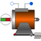
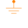

SM_PermanentMagnetPermanent magnet synchronous machine with optional damper cage |

|
Diagram
{kind=link}
Information
This information is part of the Modelica Standard Library maintained by the Modelica Association.
Resistances and stray inductances of the machine refer to an m phase stator. The symmetry of the stator is assumed. For rotor asymmetries can be taken into account by different resistances and stray inductances in the d- and q-axis. The machine models take the following loss effects into account:
- heat losses in the temperature dependent stator winding resistances
- optional, when enabled: heat losses in the temperature dependent damper cage resistances
- friction losses
- core losses (only eddy current losses, no hysteresis losses)
- stray load losses
- permanent magnet losses
See also
Parameters (30)
| Jr |
Value: Type: Inertia (kg·m²) Description: Rotor inertia |
|---|---|
| useSupport |
Value: false Type: Boolean Description: Enable / disable (=fixed stator) support |
| Js |
Value: Type: Inertia (kg·m²) Description: Stator inertia |
| useThermalPort |
Value: false Type: Boolean Description: Enable / disable (=fixed temperatures) thermal port |
| p |
Value: Type: Integer Description: Number of pole pairs (Integer) |
| fsNominal |
Value: Type: Frequency (Hz) Description: Nominal frequency |
| TsOperational |
Value: Type: Temperature (K) Description: Operational temperature of stator resistance |
| Rs |
Value: Type: Resistance (Ω) Description: Stator resistance per phase at TRef |
| TsRef |
Value: Type: Temperature (K) Description: Reference temperature of stator resistance |
| alpha20s |
Value: Type: LinearTemperatureCoefficient20 (¹/K) Description: Temperature coefficient of stator resistance at 20 degC |
| effectiveStatorTurns |
Value: 1 Type: Real Description: Effective number of stator turns |
| Lssigma |
Value: Type: Inductance (H) Description: Stator stray inductance |
| Lszero |
Value: Lssigma Type: Inductance (H) Description: Stator zero inductance |
| L0 |
Value: Type: SalientInductance Description: Salient inductance of an unchorded coil |
| frictionParameters |
Value: Type: FrictionParameters Description: Friction loss parameter record |
| statorCoreParameters |
Value: Type: CoreParameters Description: Stator core loss parameter record; all parameters refer to stator side |
| strayLoadParameters |
Value: Type: StrayLoadParameters Description: Stray load loss parameter record |
| Lmd |
Value: Type: Inductance (H) Description: Stator main field inductance, d-axis |
| Lmq |
Value: Type: Inductance (H) Description: Stator main field inductance, q-axis |
| useDamperCage |
Value: Type: Boolean Description: Enable/disable damper cage |
| Lrsigmad |
Value: Type: Inductance (H) Description: Rotor leakage inductance, d-axis, w.r.t. stator side |
| Lrsigmaq |
Value: Lrsigmad Type: Inductance (H) Description: Rotor leakage inductance, q-axis, w.r.t. stator side |
| Rrd |
Value: Type: Resistance (Ω) Description: Rotor resistance, d-axis, w.r.t. stator side |
| Rrq |
Value: Rrd Type: Resistance (Ω) Description: Rotor resistance , q-axis, w.r.t. stator side |
| TrRef |
Value: Type: Temperature (K) Description: Reference temperature of damper resistances in d- and q-axis |
| alpha20r |
Value: Type: LinearTemperatureCoefficient20 (¹/K) Description: Temperature coefficient of damper resistances in d- and q-axis |
| TpmOperational |
Value: 293.15 Type: Temperature (K) Description: Operational temperature of permanent magnet |
| TrOperational |
Value: Type: Temperature (K) Description: Operational temperature of (optional) damper cage |
| VsOpenCircuit |
Value: Type: Voltage (V) Description: Open circuit RMS voltage per phase @ fsNominal |
| permanentMagnetLossParameters |
Value: Type: PermanentMagnetLossParameters Description: Permanent magnet loss parameter record |
Outputs (7)
| phiMechanical |
Default Value: flange.phi - internalSupport.phi Type: Angle (rad) Description: Mechanical angle of rotor against stator |
|---|---|
| wMechanical |
Default Value: der(phiMechanical) Type: AngularVelocity (rad/s) Description: Mechanical angular velocity of rotor against stator |
| tauElectrical |
Default Value: inertiaRotor.flange_a.tau Type: Torque (N·m) Description: Electromagnetic torque |
| tauShaft |
Default Value: -flange.tau Type: Torque (N·m) Description: Shaft torque |
| powerBalance |
Type: PowerBalanceSMPM Description: Power balance |
| vs |
Default Value: plug_sp.pin.v - plug_sn.pin.v Type: Voltage[m] (V) Description: Stator instantaneous voltages |
| is |
Default Value: plug_sp.pin.i Type: Current[m] (A) Description: Stator instantaneous currents |
Connectors (8)
| flange |
Type: Flange_a Description: Shaft |
|
|---|---|---|
| support |
Type: Flange_a Description: Support at which the reaction torque is acting |
|
| plug_sp |
Type: PositivePlug Description: Positive plug of stator |
|
| plug_sn |
Type: NegativePlug Description: Negative plug of stator |
|
| thermalPort |
Type: ThermalPortSMPM Description: Thermal port of induction machines |
|
| internalThermalPort |
Type: ThermalPortSMPM |
|
| internalSupport |
Type: Support |
|
| ir |
Type: RealOutput[2] Description: Damper cage currents |
Components (19)
| L0 |
Type: SalientInductance Description: Salient inductance of an unchorded coil |
|
|---|---|---|
| frictionParameters |
Type: FrictionParameters Description: Friction loss parameter record |
|
| statorCoreParameters |
Type: CoreParameters Description: Stator core loss parameter record; all parameters refer to stator side |
|
| strayLoadParameters |
Type: StrayLoadParameters Description: Stray load loss parameter record |
|
| powerBalance |
Type: PowerBalanceSMPM Description: Power balance |
|
| inertiaRotor |
Type: Inertia |
|
| inertiaStator |
Type: Inertia |
|
| fixed |
Type: Fixed |
|
| stator |
Type: SymmetricMultiPhaseWinding Description: Symmetric stator winding including resistances, zero and stray inductances and core losses |
|
| thermalAmbient |
Type: ThermalAmbientSMPM |
|
|  | groundS |
Type: Ground Description: Ground of stator magnetic circuit |
| airGap |
Type: RotorSaliencyAirGap |
|
| groundR |
Type: Ground Description: Ground of rotor magnetic circuit |
|
| strayLoad |
Type: StrayLoad |
|
| friction |
Type: Friction |
|
| permanentMagnetLossParameters |
Type: PermanentMagnetLossParameters Description: Permanent magnet loss parameter record |
|
| short |
Type: Short Description: Magnetic connection in case the damper cage is not present |
|
| rotorCage |
Type: SaliencyCageWinding Description: Symmetric rotor cage winding including resistances and stray inductances |
|
| permanentMagnet |
Type: PermanentMagnet Description: Magnetic potential difference of permanent magnet |
Used in Examples (8)
|
Modelica.Magnetic.FundamentalWave.Examples.BasicMachines Starting of permanent magnet synchronous machine with inverter |
|
|
Modelica.Magnetic.FundamentalWave.Examples.BasicMachines Starting of multi phase permanent magnet synchronous machine with inverter |
|
|
Modelica.Magnetic.FundamentalWave.Examples.BasicMachines Test example: PermanentMagnetSynchronousInductionMachine fed by current source |
|
|
Modelica.Magnetic.FundamentalWave.Examples.BasicMachines Test example: PermanentMagnetSynchronousInductionMachine fed by FOC |
|
|
Modelica.Magnetic.FundamentalWave.Examples.BasicMachines Test example: PermanentMagnetSynchronousInductionMachine acting as brake |
|
|
Modelica.Magnetic.QuasiStatic.FundamentalWave.Examples.BasicMachines.SynchronousMachines Test example: PermanentMagnetSynchronousMachine with inverter |
|
|
Modelica.Magnetic.QuasiStatic.FundamentalWave.Examples.BasicMachines.SynchronousMachines Permanent magnet synchronous machine operated at mains with step torque load |
|
|
Modelica.Magnetic.QuasiStatic.FundamentalWave.Examples.BasicMachines.SynchronousMachines Test example: PermanentMagnetSynchronousMachine fed by current source |